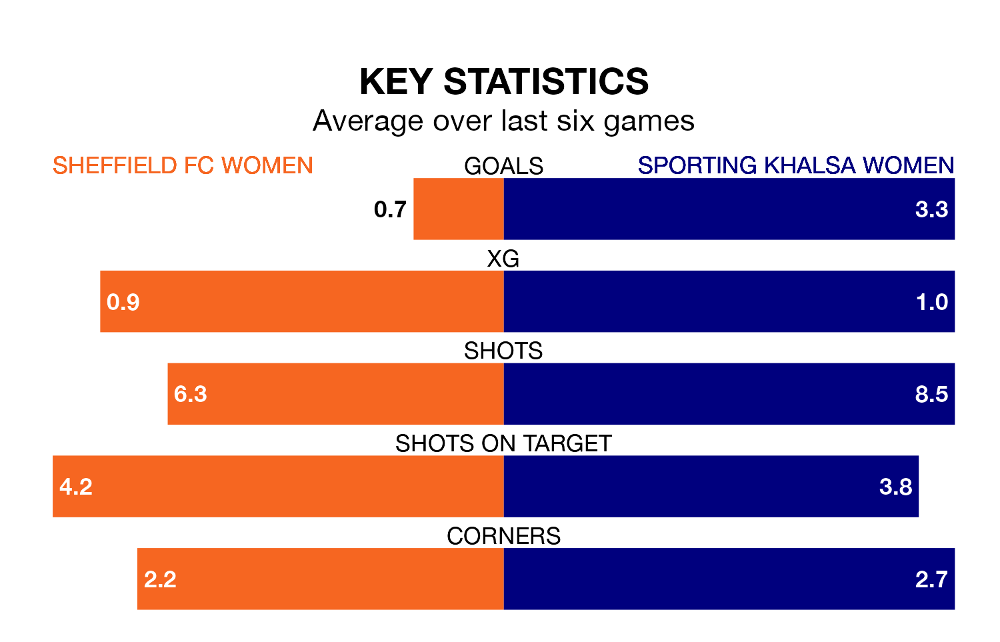

Relegation candidates Sheffield FC Women face a challenge against high-flying Sporting Khalsa Women on Sunday.
Sheffield FC Women are 10th in the Women's National League Division One – Midlands table, and have picked up three wins and six draws in their 21 games to date.
Sporting, meanwhile, are second in the standings with 48 points, having won 15 and drawn three, and are four points behind table-toppers Loughborough Lightning Women.
With 76 goals in 21 games so far this season, Sporting are the league's highest scorers with 3.6 goals per game. And they are conceding fewer than average, letting in 22 goals at a rate of 1.0 per game.
Sheffield FC, meanwhile, are below average scorers, with 0.6 goals per game, compared to a league average of 1.8. They have conceded 1.7 goals per game.
The hosts are in mixed form in the Women's National League Division One Midlands, with two wins and two draws from their last six games.
With five wins and a draw over that period, the away team's form is much better – they have taken 16 points from 18, compared to Sheffield FC's eight.
In the last three years, Sheffield FC and Sporting have played each other on three occasions. Sporting won all of them.
Their last meeting was on March 17, when Sporting won 3-0 at home.
Sheffield FC's last match was on April 21, a 1-1 draw against Loughborough Lightning Women.
Sporting drew 0-0 with Leafield Athletic Women last time out, also on April 21.
Updated: 10:44 (UTC), 30/04/24